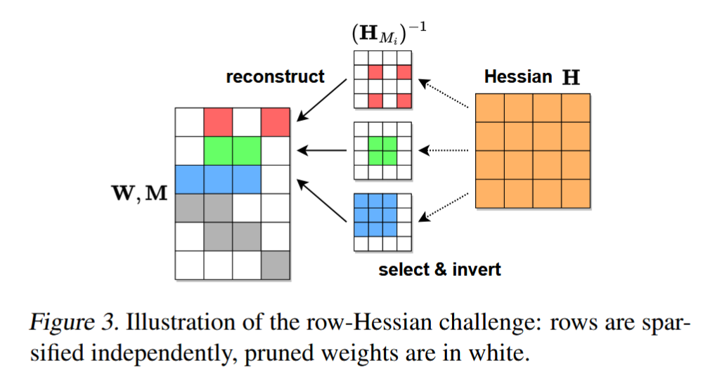
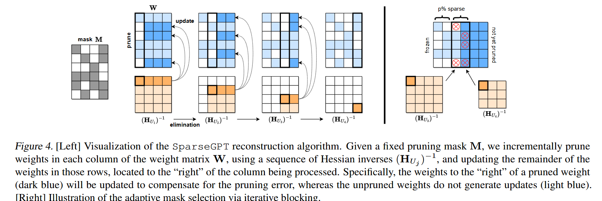
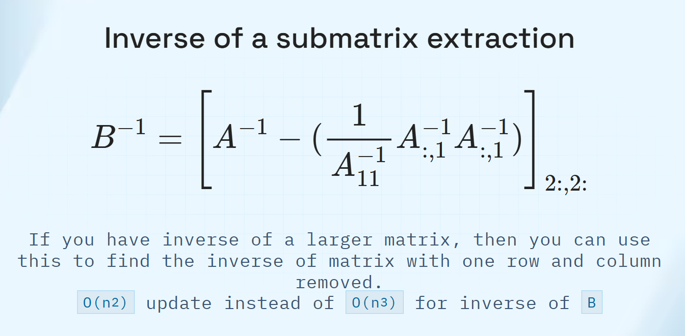
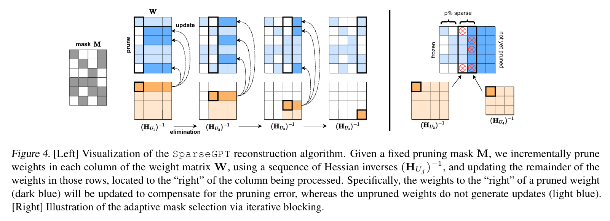
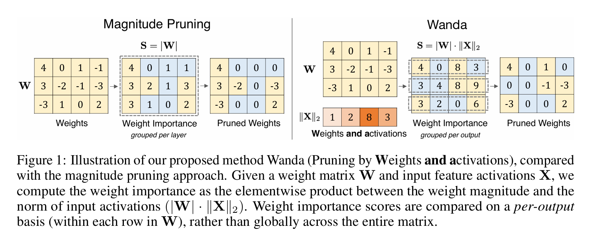
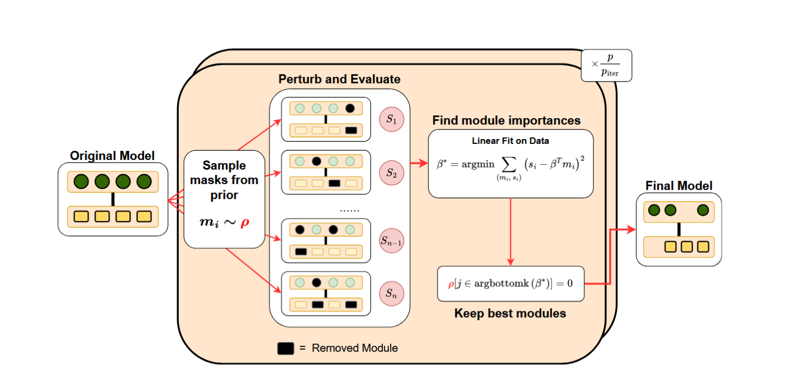

Efficient AI
Pruning / Sparsity
Aditya Desai
Many thanks to all the resources listed in References on the main website. Almost all figures are taken from these resources; some were generated with Gemini. Some images are taken from Google Images and still need proper citation (in progress).
Structured Sparsity vs Unstructured Sparsity
- Structured sparsity is more hardware friendly. But usually not very accurate
- Unstructured sparsity is more accurate. But usually not hardware friendly
- Enter: Hardware support
Hardware Support for Sparsity
N:M Semi Structured sparsity (Nvidia)
- Structured:Every M consecutive weights have exactly N non-zero weights
- Unstructured: Sparsity pattern in side that block is arbitrary
- Starting Ampere compute architecture, N:M sparsity is supported natively(N=2,M=4)
N:M sparsity
 how many bits are required to store the sparsity pattern?
how many bits are required to store the sparsity pattern?
N:M sparsity
Nvidia uses 2 bits per non-zero element (i.e. 4 bits per 2:4 sparsity block)
2:4 sparse GEMM speedups on NVIDIA A100


2:4 sparse GEMM speedups on NVIDIA A100
why you wont see speedups at times (esp. on newer hardware)
- Hardware overhead
- Smaller workloads fail to completely populate the tensor cores
- Under optimized kernels (dense kernels are optimized a lot more than sparse kernels just because of popularity)
Other hardware support for sparsity: Cerebras


Cerebras vs Nvidia

- Memory bandwidth is 10^4 times higher. Memory movement is essentially free.
Cerebras vs. Nvidia

- Additionally data execution flow is different: operation is triggered by data arrival. Zero data is ignored. Native support for sparsity.
Cerebras vs. Nvidia

- Nvidia only supports 2:4 (or 4:8) sparisty i.e. 50% sparsity. Cerebras supports arbitrary sparsity.
Pruning LLMs
Applying OBS, OBD, IMP to LLMs
- OBS: Is out of the question in its original form just because of scale
- OBD:
- Hessiann diagonal computation complexity depends on intermediate width of the graph
- Since LLMs are generalists, we need to be careful on the data we use.
- OBD needs retraining of the model.
- IMP: Easiest to implement, but iterative retraining is required
SparseGPT (Frantar & Alistarh, 2023): Apply OBS to sub-components.
-
Let us apply the pruning to sub-component trying to preserve their behavior and hope for the best!
SparseGPT (Frantar & Alistarh, 2023): Apply OBS to sub-components.
\[ \mathcal{L} = || X (\Delta W)^\top ||_2^2 \,\,\,\, X \in R^{N \times d}, \Delta W \in R^{d \times d} \] \[ \mathcal{L} = \sum_j || X \delta w_j ||_2^2 \] (sum over all neurons in the layer)What is the hessian of the loss w.r.t $W$?
SparseGPT (Frantar & Alistarh, 2023): Apply OBS to Linear Layers.
- Linear Layer pruning -- is a set of neuron pruning problems
-
Hessian-related costs:
- Hessian computation: $O(d^2)$
- Hessian inverse: $O(d^3)$
- $O(d^3)$ per pruning iteration
Hessian is shared. But
- Inverse for first step is the same. But after one pruning step, if we dont prune the same set of neurons, then inverse computation will diverge.

Solve the problem of Hessian inverse Reuse
- If same set of neurons were pruned, then we can reuse the inverse across neurons
- Idea 1: Sweep from the left. whatever is not pruned, we "freeze" it.

How to reduce complexity of Hessian inverse computation?
- O(d) Hessian inverse computations. So $O(d \times d^3) = O(d^4)$
Recall: Inverse of a submatrix using inverse of full matrix

- Compexity : O(d^3) for first inverse, then $O(d \times d^2)$ for all other inverses. SO overall $O(d^3)$
- Remark: There are further simplications.
How to achieve a p% sparsity?
- Every Column having p% sparsity?
- A block of columns having p% sparsity?
Final Algorithm: SparseGPT

What if we make the Hessian diagonal assumption? (OBD)
- Saliency (cost of pruning weight $w_q$) under the diagonal Hessian assumption: \[ \text{OBD Saliency} = \frac{1}{2} w_q^2 H_{qq} = \frac{1}{2} w_q^2 \|X_q\|_2^2 \]
- Wanda score: $|w_q|\,\|X_q\|_2$

Sun, Mingjie, Zhuang Liu, Anna Bair, and J. Zico Kolter. A Simple and Effective Pruning Approach for Large Language Models. 2024.These methods can be extended to N:M sparsity
- Look at the block of M elements and prune N using the saliency of specific methods.
- SparseGPT: sweeping block size can be M
Bonsai: Structured Sparsity with only Inference
How to select structured sparsity if you can only do inference?
- what if you only had enough resources to run a inference
- Gradient / Hessian based methods are expensive to compute. Often times with large models, you may want to use only forward passes.
- Magnitude pruning generally found to not work without good amount of training
- What can we do?
Estimate Module Relevance with forward passes only
Notation
- $M_\theta$: LLM with parameters $\theta \in \mathbb{R}^D$
- $U$: utility (e.g. language-modeling perplexity)
- $\mathbf{m} = \{m_i\}_{i \in [N]}$: modules (heads, layers, dims, …)
- $\mathbf{s} = \{s_i\}_{i \in [N]}$: parameter counts, $\sum_i s_i = D$
- $\bar{\mathbf{m}} \subseteq \mathbf{m}$: kept modules; $M|_{\bar{\mathbf{m}}}$ drops the rest
- $p$: target sparsity; $\mathcal{F}_p$: feasible sub-models at sparsity $p$
Structured pruning as combinatorial optimization
Keep at most $(1-p)D$ parameters; maximize utility among feasible module subsets.
Approximating the Utility function
- Evaluate $U$ on $n \ll |\mathcal{F}_p|$ candidates $\Rightarrow$ relevance $\beta = \{\beta_i\}_{i \in [N]}$
- Approximate the combinatorial objective by a linear score:
- Solve by sorting $\beta_j$ and greedily keeping top modules until the budget
- May slightly overshoot sparsity; negligible since $s_i \ll (1-p)D$
Estimating $\beta$

Estimating $\beta$
- Build a small dataset of virtual sub-models $\mathbb{D} = \{\bar{m}_k, U_k\}_{k\in[n]}$ with $n \ll |\mathcal{F}_p$
- $U_k = U(M|_{\bar{m}_k})$; never instantiate sub-models — zero module outputs instead
- Mask $\alpha_{\bar{m}_k}\!\in\!\{0,1\}^N$: $(\alpha_{\bar{m}_k})_i = 1$ if module $i$ is kept, else $0$
- Under-specified regression for relevance $\beta \in \mathbb{R}^N$:
Data generation: selecting sub-models
- Choosing the $n$ candidates for $\mathbb{D}$ is critical
- Uniform sampling is suboptimal: if $n < N$, a critical $m_i$ may never appear $\Rightarrow \hat{\beta}_i = 0$ and $\mathbf{m}^{\mathrm{approx}}$ is poor
- Sample with prior $\rho_i$ (usefulness): $P(m_i \text{ included}) \propto \rho_i$
- Priors from pruning literature: Wanda, activation magnitude, …
Data generation: masks & complements
- Rank modules by $\rho$; keep top $1{-}2p$ fixed; only bottom $2p$ are pruning candidates
- Draw masks $\alpha_{\bar{m}_k}$ at sparsity $p$ on that candidate set
- For each mask, also add its complement $\alpha_{\bar{m}_k}^c$ (flip bits only in the bottom $2p$; fixed part unchanged)
- Complement pairs reduce regression variance on binary inputs (Covert & Lee, 2020)
Bonsai pruning method

Kolawole, S., Dery, L., Kagy, J.F., Smith, V., Neubig, G. and Talwalkar, A., 2024. Everybody prune now: Structured pruning of LLMs with only forward passes . arXiv:2402.05406.
Results from the paper
"Let LLM Tell You What to Prune and How Much to Prune" by Yang et al. 2025 (ICML)


Takeaways for LLM Pruning
- Perplexity and Downstream quality are severely affected by pruning (w.o retraining)
- Note that this is just evaluation of base models. The effect on instruction tuned / reasoning model etc is not even evaluated.
- Even after so many papers, (structured) pruning is not a solved problem.
Logistics: Notes
- Slides and lectures are the only source of information. The list of references is provided on the webpage. But the actual content being presented is quite less. So the most efficient strategy is to just sit through the class. Or borrow notes from your classmates if you can convince them.
Logistics: Seminar Discussions
- Divide and read papers. Everyone reads atleast 2 papers (overlapping with others)
- Focus more on the "math" part of paper
- On D-7, everyone will go around and whiteboard their papers with sketching of math
- We select parts that are interesting to go in the seminar
- Then we divide the seminar into group members and they present the selected parts
- In unlikely even that we overrun Fridays, we will wrap up the discussion on following Monday
Logistics: Seminar Slides
- No fancy AI in slides. Keep them minimalistic. Use AI where it adds value
- Using AI is okay, but make sure there is no "irrelevant" information in the slides -- you should talk about 80-90% of what is on slide.
- if you dont want to talk about something, dont put it on slide.